I. Teori Dasar
Ubuntu merupakan salah satu distribusi Linux yang berbasis Debian dan didistribusikan sebagai perangkat lunak bebas.
Ubuntu ditawarkan dalam tiga edisi resmi: Ubuntu Desktop untuk komputer pribadi, Ubuntu Server untuk server dan komputasi awan, dan Ubuntu Core untuk "Internet untuk Segala", perangkat kecil dan robot. Versi baru Ubuntu dengan dukungan standar dirilis tujuh bulan sekali, sementara untuk versi dukungan jangka-panjang (LTS) dirilis dua tahun sekali. Rilis terbaru Ubuntu dengan dukungan standar adalah 18.10 (Cosmic Cuttlefish) sementara untuk versi LTS adalah 18.04 (Bionic Beaver), yang mendapat tambahan jangka waktu dukungan hingga 10 tahun, tidak seperti versi LTS lain yang mendapat dukungan hingga lima tahun saja.
Nama Ubuntu berasal dari filosofi dari Afrika Selatan yang berarti "kemanusiaan kepada sesama" Proyek Ubuntu resmi disponsori oleh Canonical Ltd. yang merupakan sebuah perusahaan yang dimiliki oleh pengusaha Afrika Selatan Mark Shuttleworth. Tujuan dari distribusi Linux Ubuntu adalah membawa semangat yang terkandung di dalam filosofi Ubuntu ke dalam dunia perangkat lunak. Ubuntu adalah sistem operasi lengkap berbasis Linux, tersedia secara bebas, dan mempunyai dukungan baik yang berasal dari komunitas maupun tenaga ahli profesional.
II. Alat dan Bahan
- 1 Unit PC
- CD Boot Ubuntu
III. Langkah Kerja
- Masukkan CD kedalam PC
- Atur Boot utama menjadi ke CD
- Tunggu proses Loading berjalan
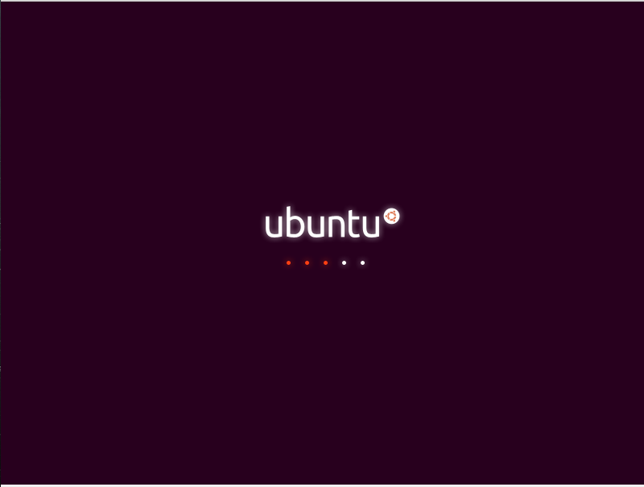
- Setelah selesai, ada 2 pilihan
- Try Ubuntu
Untuk mencoba Ubuntu tanpa menginstall yang diproses dalam CD Boot Ubuntu
- Install Ubuntu
Untuk menginstall Ubuntu
yang kita pilih adalah Install Ubuntu
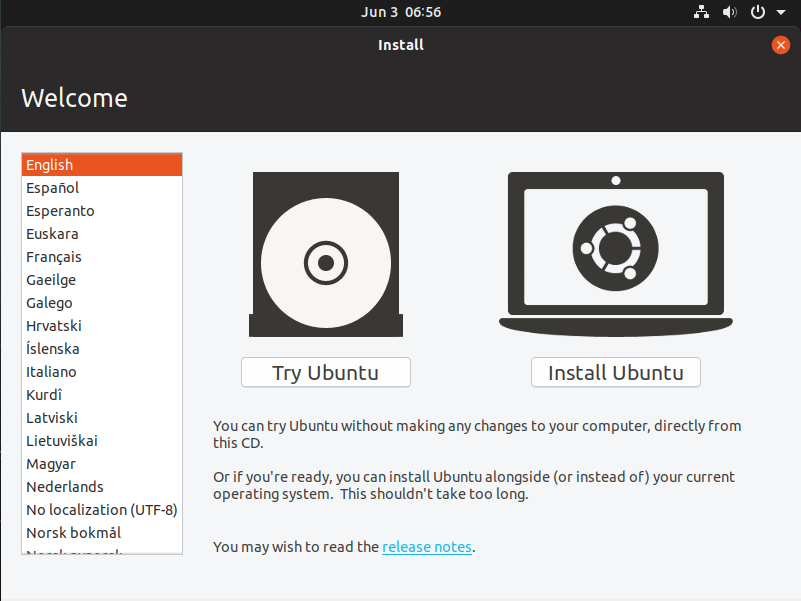
- Try Ubuntu
- Biarkan pengaturan Keyboard secara Default
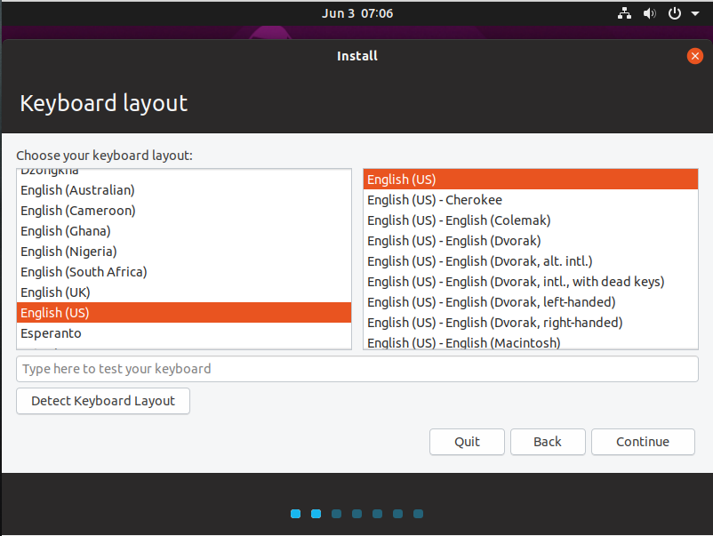
- Setelah itu ada pilihan
- Normal Installation: Untuk menginstall semua software pendukung yang ada seperti, Web browser, Games, Offices Software dan Media Players
- Minimal Installation: Untuk menginstall software yang minim seperti, Web browser dan Ultiliti yang Basic
- Download updates while installing ubuntu: Maksudnya adalah pada saat kita menginstall Ubuntu akan mendowload Software-software yang terupdate didalam Repository-nya (Memerlukan koneksi internet)
- Install third-party software: Mirip seperti Normal Installation, tapi dengan tambahan Driver-driver yang lebih kompleks
Pilihlah sesuai keinginan
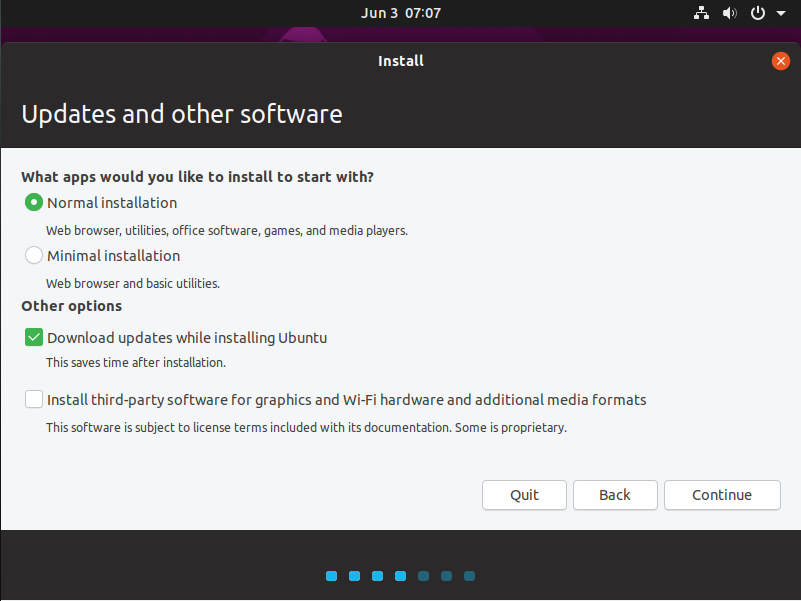
- Setelah proses pemilihan Instalasi selesai, ada pilihan lagi
- Erase disk and install Ubuntu: Berarti kita memformat semua data yang ada pada PC termasuk Sistem Operasi yang ada akan dihapus dan akan diinstall Ubuntu
- Something else: Berarti kita memanejemen sendiri peritsi-paritisi yang akan kita installkan Ubuntu sesuai keinginan kita, pilihan ini juga berlaku jika ingin Dual Boot
Yang kita pilih adalam Somethin Else
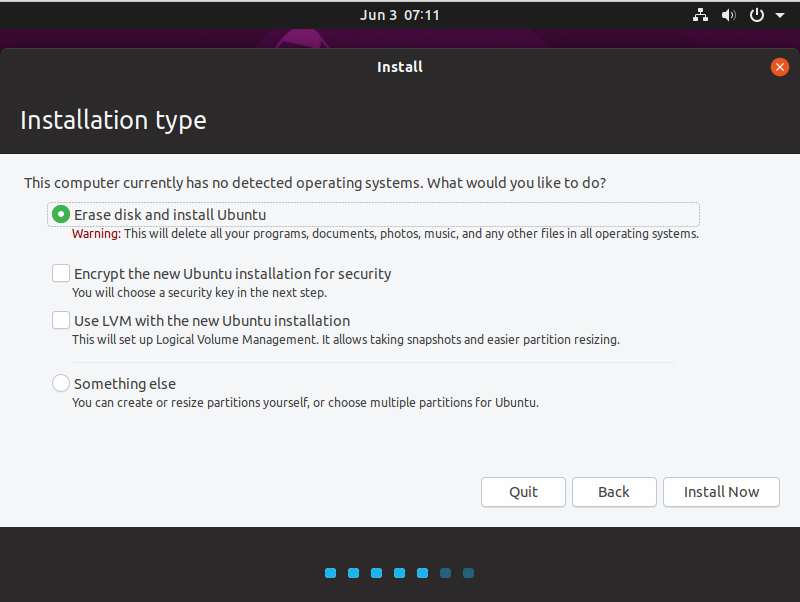
- Tampilannya akan seperti ini
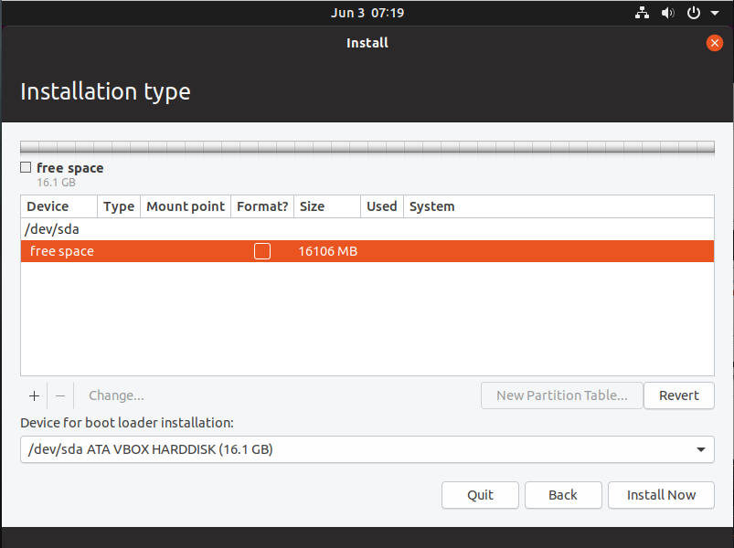
- Setelah itu tambah partisi baru dengan menekan simbol +
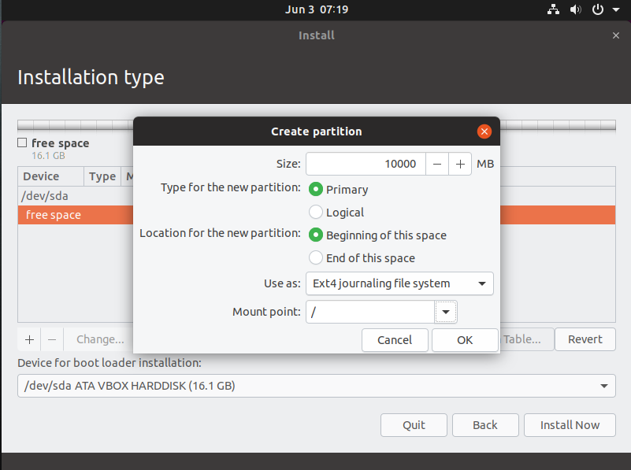
Partisi diatas untuk peruntukan Root bisa dilihat pada Mount Pointnya, untuk sizenya optional minimal 10GB
Untuk mengenal Mount Point pada Linux dengan lebih dapat dilihat disini
- Setelah partisi Root sudah ditambahkan tambahkan paritisi lagi, yaitu Swap
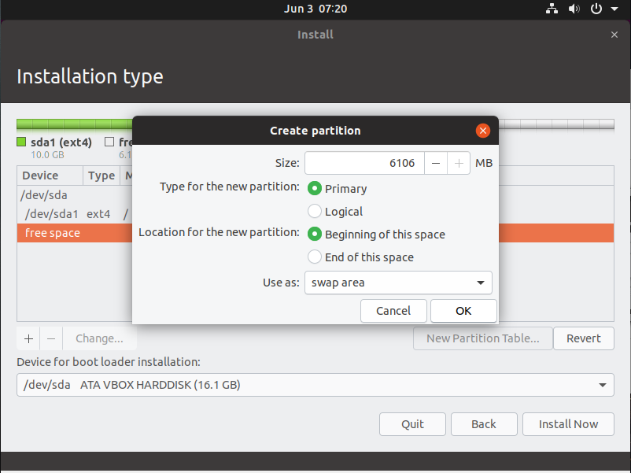
Atur sesuai gambar dengan size minimal 2 kali dari besar RAM
- Tampilan akan seperti ini
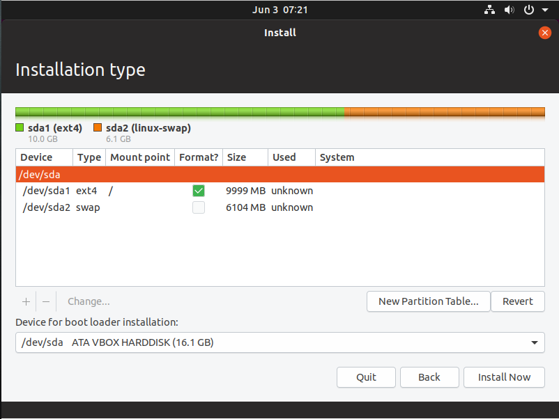
- Jika ada peringatan setelah menekan tombol Continue, tekan saja tombol Continue lagi
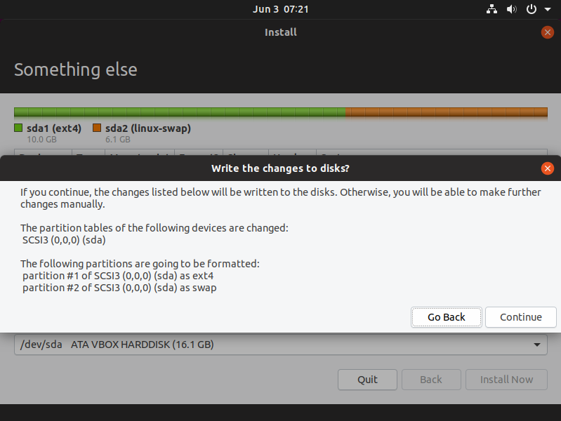
- Pilih Zona Waktu
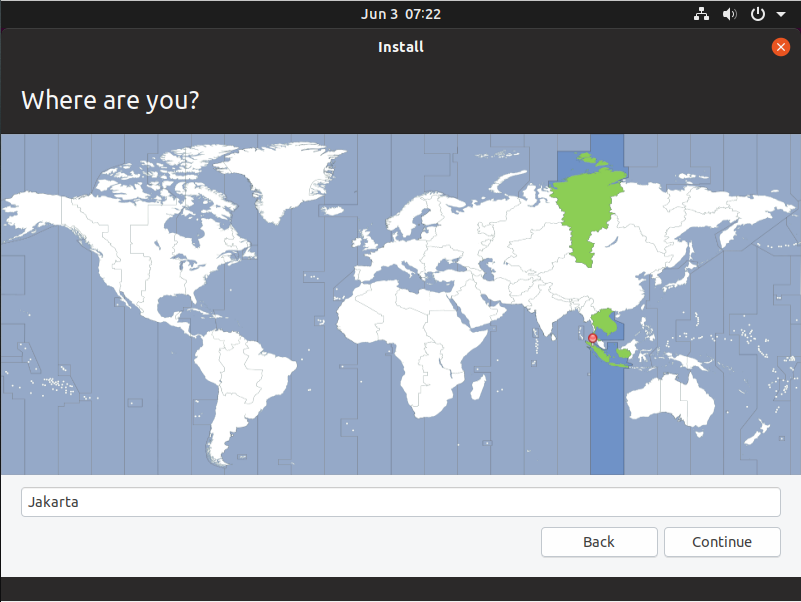
- Input Nama anda dan nama PC anda jangan lupa Password diisi juga
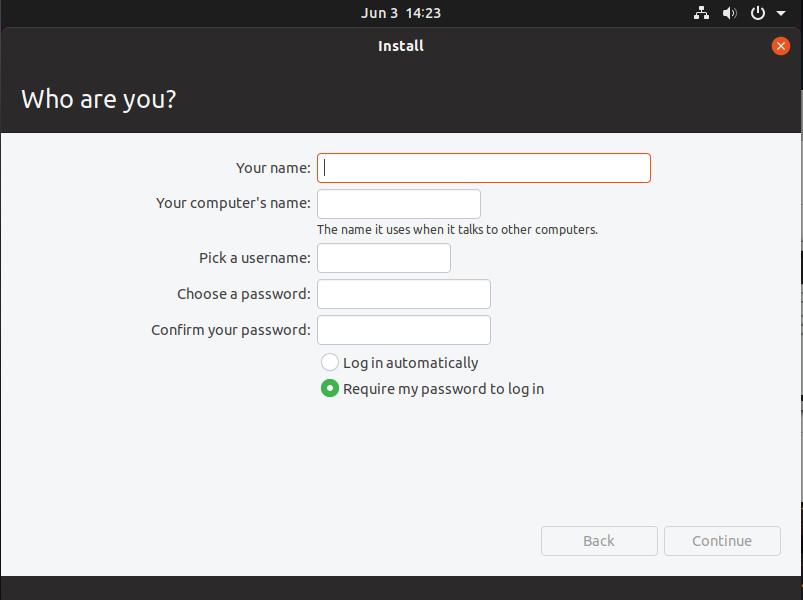
- Dan tunggu proses Install selesai
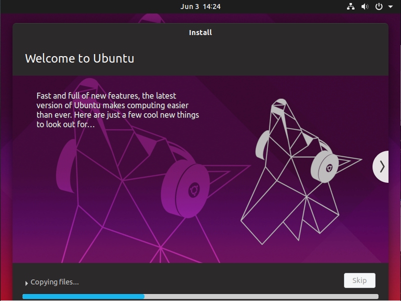
- Jika proses instalasi selesai, nanti ada Pop Up yang berisikan perintah untuk mer-Restart
- Setelah Restart selesai dan diminta untuk mengeluarkan CD dilakukan, Ubuntu siap digunakan
IV. Hasil
-
V. Kesimpulan
Ubuntu merupakan salah satu distribusi Linux yang berbasis Debian dan didistribusikan sebagai perangkat lunak bebas.
VI. Referensi
Zukron Alviandy Rahmadhan